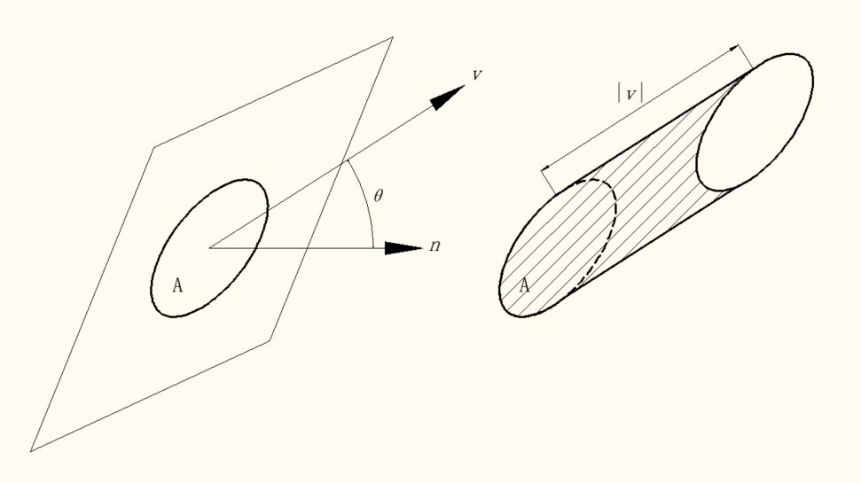
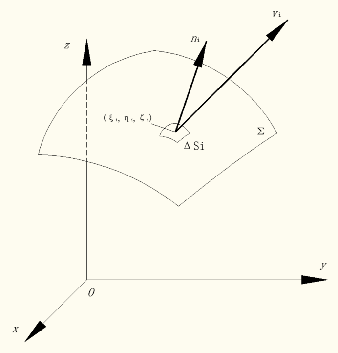

电机学入门第一步，从理解麦克斯韦方程组开始。 本文涉及大量公式，没有公式的理解没有灵魂。
麦克斯韦方程组
方程组成
麦克斯韦方程组由四个方程组成：
- 高斯定律 该定律描述电场与空间中电荷分布的关系。
- 高斯磁定律 该定律表明磁单极子实际不存在。
- 法拉第电磁感应定律 该定律描述时变磁场如何感应出电场。
- 麦克斯韦-安培定律 该定律阐明，磁场有两种生成方式：一种靠传导电流，即原本的安培定律；另一种靠时变电场或位移电流，即麦克斯韦修正项。
梯度、散度、旋度
由于大部分是对场的表述，会涉及大量的相关表征量，此处作为基础知识储备。
其实很多都是抄的数学书啦。 为了便于观看，本文除图片外所有向量将使用$\overrightharpoon{v}$而不是v的形式。
以流量为例理解对坐标的曲面积分
设稳定流动的(流速与时间t无关)、不可压缩流体(假设密度为1)的速度场由 $$\overrightharpoon{v}(x,y,z)=P(x,y,z)\overrightharpoon{i}+Q(x,y,z)\overrightharpoon{j}+R(x,y,z)\overrightharpoon{k}$$ 给出,$\Sigma$是速度场中的一片有向曲面，函数P(x,y,z)，Q(x,y,z)，R(x,y,z)都在$\Sigma$上连续，那么我们现在要求单位时间内流向$\Sigma$指定侧的流体的质量，即流量$\Phi$。 如果流体流过平面上面积为A的一个闭区域，且流体在这闭区域上各点处的流速为常向量$\overrightharpoon{v}$，设$\overrightharpoon{n}$为该平面的单位法向量，那么单位时间内流过这个闭区域的流体组成了一个底面积为A，斜高为|$\overrightharpoon{v}$|的斜柱体，如下图所示。  此时斜柱体体积为 $$A|\overrightharpoon{v}|\cos\theta=A\overrightharpoon{v}\cdot\overrightharpoon{n}$$ 这即为我们要求的流量$\Phi$。当$\overrightharpoon{v}$与$\overrightharpoon{n}$的夹角为钝角时，$A\overrightharpoon{v}\cdot\overrightharpoon{n}$<0,流量为负值，它表示流体实际流向 -$\overrightharpoon{n}$ 所指一侧(正值)。因此无论$\overrightharpoon{v}$与$\overrightharpoon{n}$的夹角为何值，流体通过闭区域A流向$\overrightharpoon{n}$所指一侧的流量$\Phi$均为$A\overrightharpoon{v}\cdot\overrightharpoon{n}$。 当平面区域转化为更为常见的曲面，流速也不再是常向量时，我们就要利用微元法来解决问题。把曲面$\Sigma$分成n小块$\Delta S_i$(同时也表示第i小块的面积)。在$\Sigma$是光滑的和$\overrightharpoon{v}$是连续的前提下，只要$\Delta S_i$的直径很小，我们就可以利用$\Delta S_i$上任一点$(\xi_i,\eta_i.\zeta_i)$处的流速 $$\begin{aligned}\overrightharpoon{v_i}&=\overrightharpoon{v}(\xi_i,\eta_i,\zeta_i) \ &=P(\xi_i,\eta_i,\zeta_i)\overrightharpoon{i}+Q(\xi_i,\eta_i,\zeta_i)\overrightharpoon{j}+R(\xi_i,\eta_i,\zeta_i)\overrightharpoon{k}\end{aligned}$$ 代替小块$\Delta S_i$上其它各点的速度，以该点$(\xi_i,\eta_i.\zeta_i)$处曲面$\Sigma$的单位法向量 $$\overrightharpoon{n_i}=\cos\alpha_i\overrightharpoon{i}+\cos\beta_j\overrightharpoon{j}+\cos\gamma_k\overrightharpoon{k}$$ 代替小块$\Delta S_i$上其它各点处的单位法向量，如下图所示：  故通过$\Delta S_i$流向指定侧的流量的近似值为： $$\overrightharpoon{v_i}\cdot\overrightharpoon{n_i}\Delta S_i$$ 将n个小块的流量求和即可，由于 $$\begin{aligned}&\cos\alpha_i\cdot\Delta S_i\approx(\Delta S_i){yz}\&\cos\beta_i\cdot\Delta S_i\approx(\Delta S_i){zx}\&\cos\gamma_i\cdot\Delta S_i\approx(\Delta S_i){xy},\end{aligned}$$ 其中$(\Delta S_i){xy}$表示$\Delta S_i$在 xOy 面上的投影区域的面积，求和式就可以写做： $$\Phi\approx\displaystyle\sum_{i=1}^n[P(\xi_i,\eta_i,\zeta_i)(\Delta S_i){yz}+Q(\xi_i,\eta_i,\zeta_i)(\Delta S_i){zx}+R(\xi_i,\eta_i,\zeta_i)(\Delta S_i){xy}]$$ 当各小块曲面的直径的最大值$\lambda \to$ 0取上和式的极限，就得到了$\Phi$的精确值，这也就是对坐标的曲面积分的定义，记作$\underset{\Sigma}{\iint}P(x,y,z)dydz+Q(x,y,z)dzdx+R(x,y,z)dxdy$；其中：$\underset{\Sigma}{\iint}P(x,y,z)dydz$称为函数P(x,y,z)在有向曲面$\Sigma$上对坐标y、z的曲面积分，$\underset{\Sigma}{\iint}Q(x,y,z)dzdx$称为函数Q(x,y,z)在有向曲面$\Sigma$上对坐标z、x的曲面积分，$\underset{\Sigma}{\iint}R(x,y,z)dxdy$称为函数R(x,y,z)在有向曲面$\Sigma$上对坐标x、y的曲面积分。此时根据前面的流量推导，曲面侧的选取(法向量的指向)会影响积分的符号。 这里可以看到在将各小块曲面直径最大值取极限后，以$(\Delta S_i){xy}$为例，变成了积分变量dxdy，同样表示该区域在 xOy 面上的投影面积，那么依照投影关系，曲面积分还可以写做： $$\underset{\Sigma}{\iint}R(x,y,z)dxdy=\underset{\Sigma}{\iint}R(x,y,z)\cos\gamma dS$$ 其它类似。这里$\Sigma$法向量方向取沿z轴正向，即方向余弦为 $$\begin{aligned}&\cos\alpha=\dfrac{-z_x}{\sqrt{1+\textstyle z_x^2 +\textstyle z_y^2}} \ & \cos\beta=\dfrac{-z_y}{\sqrt{1+\textstyle z_x^2 +\textstyle z_y^2}} \ & \cos\gamma=\dfrac{1}{\sqrt{1+\textstyle z_x^2 +\textstyle z_y^2}},\end{aligned}$$ 若法向量方向沿z轴负向，则取相反数。而法向量方向并不影响上面两个曲面积分的等价关系，它只影响曲面积分与二重积分的关系，即 $$\begin{aligned}&\underset{\Sigma}{\iint}R(x,y,z)dxdy=\underset{D_{xy}}{\iint}R(x,y,z(x,y))dxdy\space\space\space\space\space\space(\Sigma取上侧)\ & \underset{\Sigma}{\iint}R(x,y,z)dxdy=-\underset{D_{xy}}{\iint}R(x,y,z(x,y))dxdy\space \space\space(\Sigma取下侧)\end{aligned}$$ 这样我们就得到了对面积的曲面积分与对坐标的曲面积分之间的关系： $$\underset{\Sigma}{\iint}P(x,y,z)dydz+Q(x,y,z)dzdx+R(x,y,z)dxdy=\underset{\Sigma}{\iint}[P(x,y,z)\cos\alpha+Q(x,y,z)\cos\beta+R(x,y,z)\cos\gamma]dS$$ 两类曲面积分之间的关系也可以写做向量形式，即 $$\underset{\Sigma}{\iint}\overrightharpoon{A}\cdot d\overrightharpoon{S}=\underset{\Sigma}{\iint}\overrightharpoon{A}\cdot\overrightharpoon{n}dS$$ 或 $$\underset{\Sigma}{\iint}\overrightharpoon{A}\cdot d\overrightharpoon{S}=\underset{\Sigma}{\iint}A_ndS$$ 其中，$\overrightharpoon{A}$=(P,Q,R)，$\overrightharpoon{n}$=$(\cos\alpha,\cos\beta,\cos\gamma)$为某点处单位法向量，$d\overrightharpoon{S}=\overrightharpoon{n}dS=(dydz,dzdx,dxdy)$称为有向曲面元，$A_n$为向量$\overrightharpoon{A}$在向量$\overrightharpoon{n}$上的投影。
通量、散度与高斯公式
高斯公式表达了空间闭区域上的三重积分与其边界曲面上的曲面积分之间的关系，这个关系可陈述如下： 定理1：设空间闭区域$\Omega$是由分片光滑的闭曲面$\Sigma$所围成(分片光滑的曲面是指由有限个光滑曲面组成的曲面)，若函数P(x,y,z)、Q(x,y,z)与R(x,y,z)在$\Omega$上具有一阶连续偏导数，则有： $$\underset{\Omega}{\iiint}\bigg(\dfrac{\partial P}{\partial x}+\dfrac{\partial Q}{\partial y}+\dfrac{\partial R}{\partial z}\bigg)dv = \underset{\Sigma}{\oiint}Pdydz+Qdzdx+Rdxdy$$ 或 $$\underset{\Omega}{\iiint}\bigg(\dfrac{\partial P}{\partial x}+\dfrac{\partial Q}{\partial y}+\dfrac{\partial R}{\partial z}\bigg)dv = \underset{\Sigma}{\oiint}(P\cos\alpha+Q\cos\beta+R\cos\gamma)dS$$ 其中，$\Sigma$是$\Omega$的整个边界曲面的外侧，$\cos\alpha,\cos\beta,\cos\gamma$是$\Sigma$在点(x,y,z)处的法向量的方向余弦。这两个公式叫做高斯公式。 设有向量场$\overrightharpoon{F}$(x,y,z)=P(x,y,z)$\overrightharpoon{i}$+Q(x,y,z)$\overrightharpoon{j}$+R(x,y,z)$\overrightharpoon{k}$，其中函数P、Q、R均具有一阶连续偏导数，$\Sigma$是场内的一片有向曲面，$\overrightharpoon{n}$是$\Sigma$在点(x,y,z)处的单位法向量，则积分 $$\underset{\Sigma}{\iint}\overrightharpoon{F}\cdot\overrightharpoon{n}dS$$ 称为向量场$\overrightharpoon{F}$通过曲面$\Sigma$向着指定侧的通量，flux(或流量)。 高斯公式的物理意义：设在闭区域$\Omega$上有稳定流动的、不可压缩的流体(流体密度为1)的速度场 $$\overrightharpoon{v}(x,y,z)=P(x,y,z)\overrightharpoon{i}+Q(x,y,z)\overrightharpoon{j}+R(x,y,z)\overrightharpoon{k},$$ 其中函数P、Q、R均具有一阶连续偏导数，$\Sigma$是闭区域$\Omega$的边界曲面的外侧，$\overrightharpoon{n}$是曲面$\Sigma$在点(x,y,z)处的单位法向量，则可以知道，单位时间内流体经过曲面$\Sigma$流向指定侧的流体总质量就是 $$\underset{\Sigma}{\iint}\overrightharpoon{v}\cdot\overrightharpoon{n}dS=\underset{\Sigma}{\iint}v_ndS=\underset{\Sigma}{\iint}Pdydz+Qdzdx+Rdxdy.$$ 因此，高斯公式的右端可以解释为速度场$\overrightharpoon{v}$通过闭曲面$\Sigma$流向外侧的通量，即流体在单位时间内离开闭区域$\Omega$的总质量(假定流体密度为1)。由于假定流体不可压缩且流动稳定，因此在流体离开区域$\Omega$时，$\Omega$内部必须有产生流体的“源头”产生出同样多的流体来进行补充，故高斯公式左端可解释为分布在$\Omega$内的源头在单位时间内所产生的流体的总质量。 以闭区域$\Omega$的体积V除以高斯公式两端，得： $$\frac{1}{V}\underset{\Omega}{\iiint}\bigg(\dfrac{\partial P}{\partial x}+\dfrac{\partial Q}{\partial y}+\dfrac{\partial R}{\partial z}\bigg)dv = \frac{1}{V}\underset{\Sigma}{\oiint}Pdydz+Qdzdx+Rdxdy=\frac{1}{V}\underset{\Sigma}{\iint}v_ndS$$ 上式左端表示$\Omega$内的源头在单位时间单位体积内所产生的流体质量的平均值。应用积分中值定理于左端，则有： $$\bigg(\dfrac{\partial P}{\partial x}+\dfrac{\partial Q}{\partial y}+\dfrac{\partial R}{\partial z}\bigg)\bigg|_{(\xi,\eta,\zeta)}=\frac{1}{V}\underset{\Sigma}{\iint}v_ndS$$ 这里$(\xi,\eta,\zeta)$是$\Omega$内的某个点，令$\Omega$缩向一点M(x,y,z)，取上式的极限，则有： $$\dfrac{\partial P}{\partial x}+\dfrac{\partial Q}{\partial y}+\dfrac{\partial R}{\partial z}=\underset{\Omega\to M}{\lim}\dfrac{1}{V}\underset{\Sigma}{\oiint}v_ndS.$$ 上式左端称为速度场$\overrightharpoon{v}$在点M处的通量密度或散度，记作div $\overrightharpoon{v}(M)$，即： $$div\space\overrightharpoon{v}(M)=\dfrac{\partial P}{\partial x}+\dfrac{\partial Q}{\partial y}+\dfrac{\partial R}{\partial z}.$$ $div\space\overrightharpoon{v}(M)$在这里可以看作稳定流动的不可压缩流体在点M处的源头强度。因此我们可以更加精准的总结：矢量场的散度是指当体积趋向于零时，每单位体积内的矢量向外的净通量。实质上，矢量场的散度表示从一个点出发的场的通量，它指出了在那个点处的合成源。矢量场的散度是一个纯数值。 在$div\space\overrightharpoon{v}(M)$ > 0的点处，流体从该点向外发散，表示流体在该点处有正源；在$div\space\overrightharpoon{v}(M)$ < 0的点处(即矢量向外的净通量为负值，这与前面的描述并不矛盾)，流体向该点汇聚，表示流体在该点处有吸收流体的负源(又称为汇或洞)；在$div\space\overrightharpoon{v}(M)$ = 0的点处，表示流体在该点处无源。 对于一般的向量场$\overrightharpoon{F}$(x,y,z)=P(x,y,z)$\overrightharpoon{i}$+Q(x,y,z)$\overrightharpoon{j}$+R(x,y,z)$\overrightharpoon{k}$，记 $$div\space\overrightharpoon{F}=\dfrac{\partial P}{\partial x}+\dfrac{\partial Q}{\partial y}+\dfrac{\partial R}{\partial z}$$ 为向量场$\overrightharpoon{F}$的散度，此处利用向量微分算子$\nabla$，也可表达为 $$div\space\overrightharpoon{F}=\nabla\cdot\overrightharpoon{F}$$ 若向量场$\overrightharpoon{F}$的散度处处为零，那么称向量场$\overrightharpoon{F}$为无源场。 利用向量场$\overrightharpoon{F}$的通量和散度，高斯公式可以改写成下面的向量形式： $$\underset{\Omega}{\iiint}div\space \overrightharpoon{F}dv=\underset{\Sigma}{\iint}F_ndS$$ 或 $$\underset{\Omega}{\iiint}\nabla\cdot\overrightharpoon{F}dv=\underset{\Sigma}{\iint}F_ndS$$ 上式也被称为散度定理，它表明，向量场$\overrightharpoon{F}$通过闭曲面$\Sigma$流向外侧的通量等于向量场$\overrightharpoon{F}$的散度在闭曲面$\Sigma$所围区域$\Omega$上的积分。或者也可以描述为：矢量场通过任意闭合曲面向外的总通量等于矢量场的散度在闭合曲面所包围的体积内的积分。这个定理使得体积分和面积分能够相互转化。
由于涉及了$\nabla$算子，接下来也同样会用到，便简单介绍。
向量微分算子$\nabla$
向量微分算子，或Nabla算子(Nabla Operator)，或劈形算子。其形式化定义为 $$\nabla=\dfrac{d}{d\overrightharpoon{r}}$$ 在n为空间中，分母d$\overrightharpoon{r}$为包含n个分量的向量，故$\nabla$为n维向量算子。以三维空间为例： $$\nabla=\dfrac{\partial}{\partial x}\overrightharpoon{i}+\dfrac{\partial}{\partial y}\overrightharpoon{j}+\dfrac{\partial}{\partial z}\overrightharpoon{k}$$ 或 $$\nabla=(\dfrac{\partial}{\partial x},\dfrac{\partial}{\partial y},\dfrac{\partial}{\partial z})$$ 严格来说，$\nabla$并不是一个特定的算子，而是一个方便使用的数学符号，$\nabla$作用于不同类型的量，得到的就是不同类型的新量，例如 $$\begin{aligned}grad\space f&=\nabla f \div\space \overrightharpoon{v} &=\nabla\cdot\overrightharpoon{v}\curl\space \overrightharpoon{v} &=\nabla\times\overrightharpoon{v}\end{aligned}$$
环流量、旋度与斯托克斯公式
斯托克斯公式描述了曲面$\Sigma$上的曲面积分与沿着$\Sigma$的边界曲线的曲线积分之间的关系。这个关系可陈述如下： 定理2：设$\Gamma$为分段光滑的空间有向闭曲线，$\Sigma$是以$\Gamma$为边界的分片光滑的有向曲面，$\Gamma$的正向与$\Sigma$的侧符合右手规则(此时称$\Gamma$为有向曲面$\Sigma$的正向边界曲线)，若函数P(x,y,z),Q(x,y,z),R(x,y,z)在曲面$\Sigma$(连同边界$\Gamma$)上具有一阶连续偏导数，则有 $$\underset{\Sigma}{\iint}\bigg(\dfrac{\partial R}{\partial y}-\dfrac{\partial Q}{\partial z}\bigg)dydz+\bigg(\dfrac{\partial P}{\partial z}-\dfrac{\partial R}{\partial x}\bigg)dzdx+\bigg(\dfrac{\partial Q}{\partial x}-\dfrac{\partial P}{\partial y}\bigg)dxdy=\oint_\Gamma Pdx+Qdy+Rdz$$ 该公式称为斯托克斯公式。为了便于记忆，利用行列式记号将斯托克斯公式改为： $$\underset{\Sigma}{\iint}\begin{vmatrix}dydz & dzdx & dxdy \ \dfrac{\partial}{\partial x} & \dfrac{\partial}{\partial y} & \dfrac{\partial}{\partial z} \ P & Q & R\end{vmatrix}=\oint_\Gamma Pdx+Qdy+Rdz$$ 将其中的行列式按第一行展开，并把$\dfrac{\partial}{\partial y}$与R的积理解为$\dfrac{\partial R}{\partial y}$，其他同理，于是这个行列式就写为定理中的公式左端。 利用两类曲面积分之间的关系，可得斯托克斯公式的另一形式： $$\underset{\Sigma}{\iint}\begin{vmatrix}\cos\alpha & \cos\beta & \cos\gamma \ \dfrac{\partial}{\partial x} & \dfrac{\partial}{\partial y} & \dfrac{\partial}{\partial z} \ P & Q & R\end{vmatrix}dS=\oint_\Gamma Pdx+Qdy+Rdz$$ 其中$\overrightharpoon{n}$=($\cos\alpha,\cos\beta,\cos\gamma$)为有向曲面$\Sigma$在点(x,y,z)处的单位法向量，如果$\Sigma$是 xOy 面上的一块平面闭区域，则斯托克斯公式就变成格林公式，因此格林公式是斯托克斯公式的一种特殊形式。 设有向量场$\overrightharpoon{F}$(x,y,z)=P(x,y,z)$\overrightharpoon{i}$+Q(x,y,z)$\overrightharpoon{j}$+R(x,y,z)$\overrightharpoon{k}$，其中函数P、Q、R均连续。$\Gamma$是$\overrightharpoon{F}$定义域内的一条分段光滑的有向闭曲线，$\overrightharpoon{\tau}$是$\Gamma$在点(x,y,z)处的单位切向量，则积分 $$\oint_\Gamma\overrightharpoon{F}\cdot\overrightharpoon{\tau}ds$$ 称为向量场$\overrightharpoon{F}$沿有向闭曲线$\Gamma$的环流量。 由两类曲线积分之间的关系(后续补充，参照曲面积分即可)，环流量又可表达为 $$\oint_\Gamma\overrightharpoon{F}\cdot\overrightharpoon{\tau}ds=\oint_\Gamma\overrightharpoon{F}\cdot d\overrightharpoon{r}=\oint_\Gamma Pdx+Qdy+Rdz$$ 其中，$d\overrightharpoon{r}=\overrightharpoon{\tau} ds=(dx,dy,dz)$称为有向曲线元。类似于由向量场的通量可以引出向量场在一点处的通量密度(散度)一样，由向量场沿一闭曲线的环流量可以引出向量场在一点处的环量密度或旋度，它是一个向量，定义如下： 设有向量场$\overrightharpoon{F}$(x,y,z)=P(x,y,z)$\overrightharpoon{i}$+Q(x,y,z)$\overrightharpoon{j}$+R(x,y,z)$\overrightharpoon{k}$，其中函数P、Q、R均具有一阶连续偏导数，设有向量场$\overrightharpoon{F}$通过的不闭合曲面$\Sigma$，其边界为闭合曲线$\Gamma$，则向量场$\overrightharpoon{F}$沿$\Gamma$的环量除以该曲面的面积$\Delta S$，并当曲面面积收缩趋向至0，曲面$\Sigma$变为曲面微分元(可看作某点)时，我们就得到了这一点的环量密度，此时给这环量密度一个方向，使它与向量旋转的方向符合右手法则，成为一个矢量，这样得到的矢量就可以提供向量场在这一点的旋转性质。数学表述为： $$\begin{aligned}\mathbf{rot}\space \overrightharpoon{F} & =\underset{\Delta S\to 0}{\lim}\dfrac{\oint_\Gamma\overrightharpoon{F}d\overrightharpoon{r}}{\Delta S}\cdot \overrightharpoon{a_n} \ & \ & =\bigg(\dfrac{\partial F_z}{\partial y}-\dfrac{\partial F_y}{\partial z}\bigg)\overrightharpoon{a_x}+\bigg(\dfrac{\partial F_x}{\partial z}-\dfrac{\partial F_z}{\partial x}\bigg)\overrightharpoon{a_y}+\bigg(\dfrac{\partial F_y}{\partial x}-\dfrac{\partial F_x}{\partial y}\bigg)\overrightharpoon{a_z}\end{aligned}$$ 其中$\overrightharpoon{a_n}$为曲面微分元的单位法向量。同样，这个矢量也可以表示为： $$\bigg(\dfrac{\partial R}{\partial y}-\dfrac{\partial Q}{\partial z}\bigg)\overrightharpoon{i}+\bigg(\dfrac{\partial P}{\partial z}-\dfrac{\partial R}{\partial x}\bigg)\overrightharpoon{j}+\bigg(\dfrac{\partial Q}{\partial x}-\dfrac{\partial P}{\partial y}\bigg)\overrightharpoon{k}$$ 那么这个矢量称为向量场$\overrightharpoon{F}$的旋度，记作$\mathbf{rot}\space \overrightharpoon{F}$或$\mathbf{curl}\space \overrightharpoon{F}$，即 $$\mathbf{rot}\space \overrightharpoon{F}=\bigg(\dfrac{\partial R}{\partial y}-\dfrac{\partial Q}{\partial z}\bigg)\overrightharpoon{i}+\bigg(\dfrac{\partial P}{\partial z}-\dfrac{\partial R}{\partial x}\bigg)\overrightharpoon{j}+\bigg(\dfrac{\partial Q}{\partial x}-\dfrac{\partial P}{\partial y}\bigg)\overrightharpoon{k}$$ 与散度的推导类似，矢量场的旋度是当曲面面积S收缩至零时，矢量场沿包围不闭合曲面的边界的线积分。实质上，旋度是矢量场关于一个点的合成环流量，它可以表示三维向量场对某一点附近的微元造成的旋转程度。旋度矢量的方向是这一点的合成环量的旋转轴，与向量旋转的方向满足右手法则，而旋度矢量的大小是合成环量与旋转路径所围成的曲面微元面积之比。 利用向量微分算子$\nabla$，向量场$\overrightharpoon{F}$的旋度$\mathbf{rot}\space \overrightharpoon{F}$可表示为$\nabla\times\overrightharpoon{F}$，即 $$\mathbf{rot}\space \overrightharpoon{F}=\nabla\times\overrightharpoon{F}=\begin{vmatrix}\overrightharpoon{i} & \overrightharpoon{j} & \overrightharpoon{k} \ \dfrac{\partial}{\partial x} & \dfrac{\partial}{\partial y} & \dfrac{\partial}{\partial z} \ P & Q & R\end{vmatrix}.$$ 若向量场$\overrightharpoon{F}$的旋度$\mathbf{rot}\space \overrightharpoon{F}$处处为零，则称向量场$\overrightharpoon{F}$为无旋场，而一个无源且无旋的向量场称为调和场。调和场是物理学中一类重要的向量场，它与调和函数有着密切的联系。 设斯托克斯公式中的有向曲面$\Sigma$在点(x,y,z)处的单位法向量为 $$\overrightharpoon{n}=\cos\alpha\overrightharpoon{i}+\cos\beta\overrightharpoon{j}+\cos\gamma\overrightharpoon{k}$$ 则 $$\mathbf{rot}\space \overrightharpoon{F}\cdot\overrightharpoon{n}=\nabla\times\overrightharpoon{F}\cdot\overrightharpoon{n}=\begin{vmatrix}\cos\alpha & \cos\beta & \cos\gamma \ \dfrac{\partial}{\partial x} & \dfrac{\partial}{\partial y} & \dfrac{\partial}{\partial z} \ P & Q & R\end{vmatrix}$$ 于是，斯托克斯公式可以写为向量形式，即 $$\underset{\Sigma}{\iint}\mathbf{rot}\space \overrightharpoon{F}\cdot\overrightharpoon{n}dS=\oint_\Gamma\overrightharpoon{F}\cdot\overrightharpoon{\tau}ds$$ 或 $$\underset{\Sigma}{\iint}(\mathbf{rot}\space\overrightharpoon{F})ndS=\oint\Gamma\overrightharpoon{F}_\tau ds$$ 上式表示向量场$\overrightharpoon{F}$沿有向闭曲线$\Gamma$的环流量等于向量场$\overrightharpoon{F}$的旋度通过曲面$\Sigma$的通量，这里$\Gamma$的正向应与$\Sigma$的侧符合右手规则。这使得面积分与线积分之间得以相互转化。 这里给出了从力学角度对旋度$\mathbf{rot}\space\overrightharpoon{F}$的解释： 设有刚体绕定轴 L 转动，角速度为 $\omega$ ，M 为刚体内任意一点，在定轴 L 上任取一点 O 为坐标原点，作空间直角坐标系，使 z 轴与定轴 L 重合，则 $\overrightharpoon{\omega}=\omega\overrightharpoon{k}=(0,0,\omega)$ ，而点 M 可用向量$\overrightharpoon{r}=\overrightharpoon{OM}=(x,y,z)$来确定，则可知点 M 的线速度$\overrightharpoon{v}$可表示为(注意角速度方向与线速度方向满足右手法则) $$\overrightharpoon{v}=\overrightharpoon{\omega}\times\overrightharpoon{r}$$ 由此有： $$\overrightharpoon{v}=\begin{vmatrix}\overrightharpoon{i} & \overrightharpoon{j} & \overrightharpoon{k} \ 0 & 0 & \omega \ x & y & z\end{vmatrix}=(-\omega y,\omega x,0)$$ 而线速度的旋度 $$\mathbf{rot}\space\overrightharpoon{v}=\begin{vmatrix}\overrightharpoon{i} & \overrightharpoon{j} & \overrightharpoon{k} \ \dfrac{\partial}{\partial x} & \dfrac{\partial}{\partial y} & \dfrac{\partial}{\partial z} \ -\omega y & \omega x & 0\end{vmatrix}=(0,0,2\omega)=2\overrightharpoon{\omega}$$ 可以看到速度场的旋度与刚体角速度的关系，同方向且成二倍关系，若考虑转动惯量，速度场的旋度与角加速度也有类似的关系。
那么接下来就从电磁学的角度解释散度与旋度等场的表征量。
高斯定律
静电学高斯定律
在这里要说的高斯定律其实就是在静电场与磁场中去分别解释物理世界。前面已经引入了高斯公式，在电磁学中主要用到的是通量形式，即前面提到的通过曲面的通量等于散度在该区域内的积分。而散度其实就是通量密度，在定义中可以看到是将产生通量的场缩向了一点，故我们理解为辐射能量或吸收能量的一个源。那么在静电场中，这个源就是某一个电荷，它激发电场，产生电通量。我们知道这样的规律：通过一个闭合曲面的电通量是和这个曲面内包含的电荷总量成正比的，这就是静电场中的高斯定律的解释，即真空条件下： $$\Phi=\oiint_S\overrightharpoon{E}\cdot d\overrightharpoon{S}=\dfrac{1}{\varepsilon_0}\displaystyle\sum_{i=1}^n q_i=\oiiint_V \rho_0dV\space\space\space\space(1-1)$$ 这反映了静电场是有源场，或者叫散度场，其源为电荷。在静电场中，通过任意闭合曲面的电通量，等于该闭合曲面所包围的电荷的代数和的$\dfrac{1}{\varepsilon_0}$倍，而与闭合曲面外的电荷无关，与闭合曲面内的电荷位置分布无关。这里的$\varepsilon$为真空电容率或真空介电常数，$\rho_0$为该处电荷密度即对应的散度(当然如果此处电荷密度并不均匀，或者有体积形状影响而不能等效为质点，都应该将$\rho_0$看作密度函数)。静电场还有其他的性质(库仑定律、场强的矢量叠加原理等)，这里就不再细说。
此处的高斯定律与库仑定律引出了物理世界的一个规律：平方反比规律，有空分析一下。
式(1-1)即麦克斯韦方程组积分形式的第一个式子。当不是真空条件，电介质极化后产生的极化电荷改变了原来的电场分布，于是上式变成： $$\Phi=\oiint_S\overrightharpoon{D}\cdot d\overrightharpoon{S}=\dfrac{1}{\varepsilon_0}\displaystyle\sum (q_0+q_p)\space\space\space\space(*)$$
这里下面的推导可能有些问题，涉及一些极化强度和电荷密度的问题，还有对电位移的理解，现在没必要抠那么细，留待后续补充吧。
式(*)表示非真空静电场中任意闭合曲面的电位移通量等于该曲面内的自由电荷的代数和。两边同时除以该处区域体积并取极限(求散度的操作)，等式左边变为场的散度，等式右边变为电荷密度，即： $$\nabla\cdot\overrightharpoon{E}=\dfrac{1}{\varepsilon_0}(\rho_0+\rho_p)\space\space\space\space()$$ 进一步引入概念电位移矢量**，记作$\overrightharpoon{D}$，有 $$\overrightharpoon{D}=\varepsilon_0\overrightharpoon{E}+\overrightharpoon{P}$$ 其中$\overrightharpoon{P}$为电极化强度，则式(**)就变为 $$\nabla\cdot\overrightharpoon{D}=\rho_0\space\space\space\space(2-1)$$ 式(2-1)即静电学高斯定律的微分形式，也是麦克斯韦方程组微分形式的第一个式子，表示电位移的散度等于该点电荷密度。
高斯磁定律
在磁场中，高斯定律的解释出现了本质的区别，无论在稳恒磁场还是时变磁场下，由于磁力线都是闭合的，任何一条磁力线进入某个闭合曲面，必然会从闭合曲面内部出来，在某处形成闭合，那么由于通量在侧的方向选择不同符号不同的条件下，一定会有磁通量正负相抵，即： $$\Phi=\oiint_S\overrightharpoon{B}\cdot d\overrightharpoon{S}=0\space\space\space\space(1-2)$$ 对应的微分形式为： $$\nabla\cdot\overrightharpoon{B}=0\space\space\space\space(2-2)$$ 因此，磁场中的高斯定理说明了自然界不存在磁单极子，磁场为无源场，磁感线(磁力线)都是无头无尾的闭合曲线；磁场量可以由源电流的瞬时值唯一确定，因而磁场随时间的变化直接跟随源电流的时间变化。
法拉第电磁感应定律
法拉第电磁感应定律是描述磁生电的物理规律，这个大多数人耳熟能详，也知道那个最简单的实验：放置两块分别为N、S极的永磁体，它们中间会形成大致平行的磁感线束，那么用一个金属棒在它们中间作切割磁感线运动，此时可以测得金属棒两端产生了电流。如果金属棒不动，而去改变磁场强度或磁场分布，同样能使金属棒两端产生电流。 这个实验的过程，实际上可以看作在改变两个物理量，一个是磁感线通过回路的面积，一个是磁场强度，而它们的矢量点积就是回路的磁通量。因此电磁感应定律可以描述为：若通过回路(曲面)的磁通量发生了改变，回路中就会产生电路，且磁通量改变的越快，产生的电流越大。注意这里的曲面一定不是闭曲面，由高斯磁定律我们知道通过闭曲面的磁通量一定为0，那么一定无法产生电流。 这里的产生的电流要如何描述呢？定律已经说明了，这个过程叫感应，产生的电流叫感应电流，产生的电动势叫感应电动势。这个在高中已经学的很明白了，而且还有叫法上的注意：通过前面的实验能得知，感应电流来源有两种，那么称导体切割磁感线运动产生的电流(电动势)为动生电流(电动势)；称改变磁通量得到的电流(电动势)为感生电流(电动势)。其实本质相同，但是衍生了不同的称呼。 下面统一称磁通量改变而激发的电场为感生电场。感生电场又被称为涡旋电场，可以用围绕在磁感线周围的、闭合的电场线描述，与静电场有区别。涡旋电场被定义为随时间变化着的磁场在其周围空间激发的一种电场，能够对处于其中的带电粒子施以力的作用。涡旋电场是非保守场(无旋场且第二类曲线积分与路径无关)，
设计保守场、无旋场、有势场等概念区分，后面会在其他文章中讨论，这里就不再详细展开。
麦克斯韦-安培定律